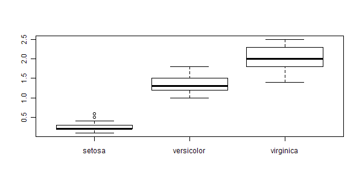

Consider Fisher's famous iris data set. It has sepal and petal length and width of a total of 150 flowers from 3 species
The first few lines of the data are shown in Table 1.
|
Figure 1 shows a boxplot of petal widths by species - there is a large apparent separation of this measurement.

Variation of petal width by species
The separation can be formally confirmed via ANOVA:
|
--- Signif. codes: 0 ‘***’ 0.001 ‘**’ 0.01 ‘*’ 0.05 ‘.’ 0.1 ‘ ’ 1